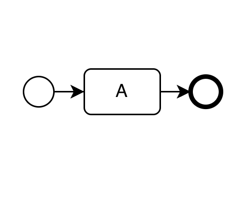
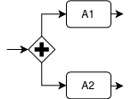
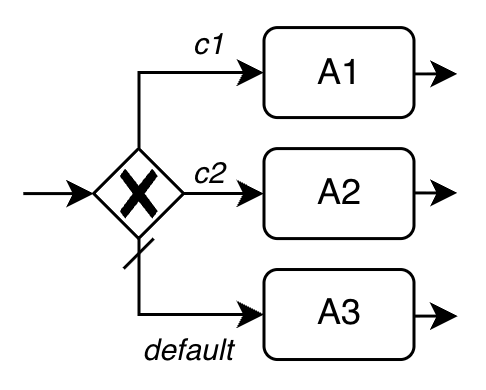
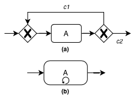

| Sequential | Parallel | Conditional | Loop |
|---|---|---|---|
| From the start to the end event following the sequence flow | AND Gateway | XOR Gateway | Combination of XOR gateways (a) or the Loop Activity (b) |
|  |  |  |  |
| The flow transitions to activity A, which is executed, and then the process ends | A1 and A2 are executed in parallel | If c1 is true, A1 is executed; if c2 is true, A2 is executed; if neither c1 nor c2 is true, the default flow is taken and A3 is executed | (a) A is executed until condition c1 is true (b) A is executed for n-times |